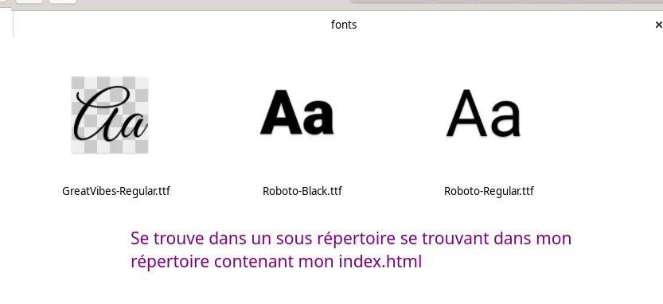

Font
C'est la police de caractères utiliser pour afficher notre texte.
Elle peut être de plusieurs style différents. Nativement css en propose plusieurs.
- Serif : Les polices à empattement ont un petit trait aux bords de chaque lettre. Elles créent un sentiment de formalité et d'élégance.
- Sans-serif : Les polices sans empattement ont des lignes épurées (sans petits traits attachés). Elles créent un aspect moderne et minimaliste.
- Monospace : Les polices à largeur fixe oû toutes les lettres ont la même largeur fixe. Elles créent un aspect mécanique.
- Cursive : Les polices cursives imitent l'écriture manuscrite.
- Fantasy : Les polices fantaisie sont des polices décoratives/joueuses.

Le choix de la ou les polices à une importance réel sur le rendue de la page et l'impression qu'elle fait à l'utilisateur.
Il est généralement préconiser de ne pas avoir plus de 3 polices différentes afin de garder une certaines cohérence et facilitée de lecture.
On va trouver de nombreuse polices payantes ou gratuite sur le web. On peut notament aller regarder du coté de fonts google
Installer une police
Il suffit de la télécharger et unzip. Puis copier le fichier .ttf ( extension largement supportée ) et le placer dans notre repertoire public ( là où se trouve notre page index.html )

Maintenant il faut indiquer à notre css qu'une nouvelle police doit être prise en compte.
Attention que chaque police ajouter augmente la taille de notre fichier css et donc le temps de chargement de notre page.
/* on l'importe/la définie */
@font-face {
font-family: GreatVibes-Regular;
src: url("../fonts/GreatVibes-Regular.ttf");
}
/* on l'utilise */
@font-face {
font-family: GreatVibes-Regular;
src: url("../fonts/GreatVibes-Regular.ttf");
}